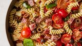

Pasta Salad

Description
A pasta salad made with a blend of pepperoni, tomatoes and provolone cheese. It is a good
option for a light-tasting dish.
Ingredients
- Salt
- 16 ounces of package fusili (spiral) pasta.
- 3 cups of cherry tomatoes (halved).
- 1/2 pound of provolone cheese (cubed).
- 1/2 pound of salami (cubed).
- 1/4 pound of sliced pepperoni (halved).
- 1 large green bell pepper, cut into 1 inch pieces.
- 10 ounces of black olives (drained, if from a can).
- 4 ounces of jar pimentos (drained, if from a can).
- 8 ounces of Italian salad dressing.
Steps
- Boil a large pot of lightly salted water. Cook the pasta in the pot, stirring ocasionally until tender
and firm (about 12 minutes). Drain afterwards.
- Add the tomatoes, cheese, salami, pepperoni, green pepper, olives and pimentos to the pasta in a large bowl.
- Slowly pour in the salad dressing while mixing the salad in the bowl.